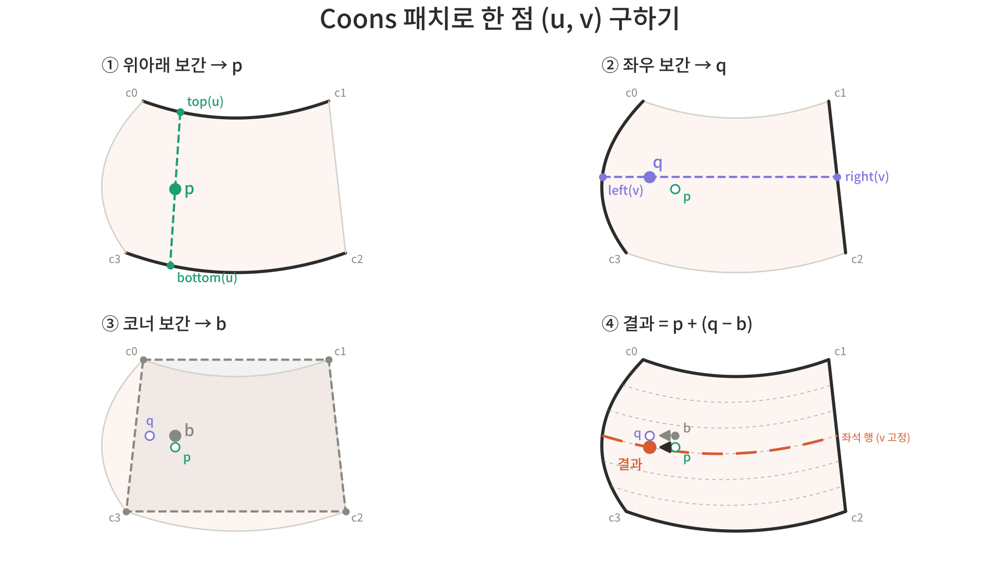

[podoR] 3. FE 좌석맵 에디터 구현과 트러블 슈팅
서론
- 왜
좌석맵 에디터/뷰어를 개발했는가- ‘서비스 구현에 필요한
섹션/좌석 맵‘을 등록/수정 할 수 있는 에디터가 필요하다 판단 - 이때, 에디터는 다음과 같은 기능을 수행할 수 있어야 함
- 공연장마다 다른
구조와좌석 배치를 구현하고, 이를 추후 수정할 수 있어야 함 - 어떤 좌석을 예매했는지를 매치시킬 좌석 엔티티를 DB에 등록할 수 있어야 함
- 공연장마다 다른
- ‘서비스 구현에 필요한
- 이 글에서는 어떻게 요구사항 -> 기능을 도출하고, 겪은 문제들을 어떻게 해결했는지 정리하고자 함
핵심 설계 사항
섹션 맵->좌석 맵으로 이어지는 2단계 구조- 티케팅시 진입 단계를 두 단계로 나누어, 예매라는 핵심 로직에 도달하는 시간을 지연시킴
SVG기반의 섹션/좌석 시각화<canvas>기반과svg기반 중 고민했으나,svg기반이 더 이점이 많다고 판단함- DOM 기반으로 처리할 수 있는
svg와 달리,<canvas>는 렌더된 요소에 대해 좌표 계산 및 이벤트 처리 로직을 직접 작성해주어야 한다. <canvas>의 강점은 많은 객체를 렌더링하는데에 있는데, 이미 섹션 단위로 좌석을 쪼개기 때문에 렌더링할 양이 많지 않다(많아야 한 섹션 당 몇 천좌석가량)
- DOM 기반으로 처리할 수 있는
JSON기반의 데이터 저장섹션/좌석 맵을DB에 저장할 수 있는 형태로직렬화/역직렬화하기 위해서는JSON형태로 저장해야 함
핵심 기능
- 컴포넌트 설계
/admin/venues/[seq]/seatmap (page.tsx)
└── SeatmapStudio ─────────────────────────── useState ×6
│
├── SeatmapRegisterBar ────────────────── useState: status, showJson
│
├── SectionEditor ─────────────────────── useReducer(editorReducer)
│ ├── EditorToolbar (상태 없음)
│ ├── EditorCanvas ──────────────────── useState: view, panning
│ │ │ useRef: svg, drag, viewRef,
│ │ │ suppressClick, lastAnchorClick, lastHandleClick
│ │ ├── BackgroundLayer (상태 없음)
│ │ ├── SectionShape × N (상태 없음)
│ │ └── DraftLayer (상태 없음)
│ └── JsonPanel ────────────────────── useState: draft, error, prevExported
│
└── SeatEditor (editing 일 때만) ──────── useReducer(seatEditorReducer)
│ key={section.id}
├── SeatToolbar (상태 없음)
├── SeatCanvas ───────────────────── useState: view, panning, hoveredId, marquee
│ useRef: svg, drag, viewRef
└── SeatJsonPanel ────────────────── useState: boundary, error
/admin/events/[eventId]/seats (page.tsx)
└── EventSeatPlanEditor ───────────────────── useState ×7 ← 별도 트리. 편집기 컴포넌트를 공유하지 않고
seatmapApi/seatGeometry 만 재사용해 좌석맵을 "읽어서" 소비
섹션 편집(SectionEditor)
필요 요구사항
- 찍은 점들을 이어 다각형(Polygon) 형태의 섹션을 그리는 기능
- 점들을 잇는 선을 곡선으로 바꿀 수 있는
펜 툴형태의 기능
실제 설계
SeatEditor: 툴바, 캔버스 등 하위 컴포넌트에상태(editorReducer) 전파EditorCanvas: 메인 캔버스svg(EditorCanvas.svgRef)에서 섹션 그리기, 드래그 등이벤트 처리- 현재 그리고 있는 다각형(
DraftLayer), 배경화면(BackgroundLayer), 완성한 섹션들(SectionShape) 등은 하위 레이어 컴포넌트로 분리
- 현재 그리고 있는 다각형(
editorReducer: ‘현재까지 그린 섹션(sections[])’, ‘현재 잇고있는 점들(draft[])’, ‘사용중인 도구(tool)’ 등 상태 관리JsonPanel:JSON내보내기(복사/다운로드)/불러오기
핵심 코드
EditorCanvas에서 앵커/핸들 클릭 처리 로직
function beginAnchorDrag(
e: React.PointerEvent,
sectionId: string,
anchorId: string,
) {
if (shouldPan(e)) return startPan(e);
if (e.button !== 0) return;
e.stopPropagation();
suppressClickRef.current = true;
// 더블클릭: 곡선 앵커면 직선화, 코너면 곡선화 토글.
const now = Date.now();
const prev = lastAnchorClickRef.current;
if (prev && prev.anchorId === anchorId && now - prev.time < DBL_MS) {
lastAnchorClickRef.current = null;
dragRef.current = null;
const sec = state.sections.find((s) => s.id === sectionId);
const a = sec?.anchors.find((an) => an.id === anchorId);
const hasHandles = !!(a && (a.handleIn || a.handleOut));
dispatch({
type: hasHandles ? "STRAIGHTEN_ANCHOR" : "SMOOTH_ANCHOR",
sectionId,
anchorId,
});
return;
}
lastAnchorClickRef.current = { anchorId, time: now };
svgRef.current?.setPointerCapture(e.pointerId);
dragRef.current = { kind: "anchor", sectionId, anchorId };
}
function beginHandleDrag(
e: React.PointerEvent,
sectionId: string,
anchorId: string,
side: HandleSide,
) {
if (shouldPan(e)) return startPan(e);
if (e.button !== 0) return;
e.stopPropagation();
suppressClickRef.current = true;
// 같은 핸들을 더블클릭하면 해당 변을 직선화(핸들 제거).
const now = Date.now();
const prev = lastHandleClickRef.current;
if (
prev &&
prev.anchorId === anchorId &&
prev.side === side &&
now - prev.time < DBL_MS
) {
lastHandleClickRef.current = null;
dragRef.current = null;
dispatch({ type: "REMOVE_HANDLE", sectionId, anchorId, side });
return;
}
lastHandleClickRef.current = { anchorId, side, time: now };
svgRef.current?.setPointerCapture(e.pointerId);
dragRef.current = { kind: "handle", sectionId, anchorId, side };
}
발생한 문제 및 해결
- 곡선 핸들
더블 클릭시 직선화(핸들 삭제) 안되는 문제- 섹션의 점 중 하나를 더블 클릭했을때
곡선 앵커<->코너 앵커로 변환하는 로직(EditorCanvas.beginAnchorDrag)을 구현했음 - 이를 섹션 폴리곤(
SectionShape)의 컨트롤 핸들(<rect>)에서 캡처하도록 했으나, 다음과 같은 이유로 클릭 떼기(pointerup)시 다른 태그에서 이벤트가 트리거됨- 핸들의 칠해지지 않은 구역을 클릭했을 경우 해당 위치의 요소에 이벤트가 트리거 됨(
svg의 기본 값이pointer-events: visiblePainted(정확히는pointer-events: auto)로 동작하기 때문) - 메인 캔버스
svg에서setPointerCapture로 포인트 캡처를 걸고 있었음핸들 드래그,섹션 드래그등 포인터가 대상 요소 밖으로 나가도 이벤트를 처리할 수 있도록 하기 위함
- 핸들의 칠해지지 않은 구역을 클릭했을 경우 해당 위치의 요소에 이벤트가 트리거 됨(
- 이로 인해, 곡선 핸들
클릭/더블클릭이 모두 캡처 대상인svg로 보내짐- 이렇게 될 경우,
click,dblclick의 target이svg가 되므로 이벤트는svg위로만버블링되고, svg의 자식인rect로 내려가지 못함 - 따라서
rect에onDoubleClick으로 설정해둔 핸들러가 트리거되지 못함 - 실제 이벤트 흐름
pointerdown-rectrect의onPointDown으로 연결된beginHandleDrag가 호출되면서,svg.setPointerCapture()가 수행됨
pointerup-svg(포인터가rect위에 있어도svg로 이벤트가 감)click-svg(down은rect,up은svg-> 공통 조상이svg이고 캡처 대상도svg이므로svg로 이벤트 감)dblclick-svg(위와 동일한 이유)
- 이렇게 될 경우,
- 따라서
더블 클릭로직을 처리하기 위해 다음과 같은 대안을 이용- 마지막에 클릭된 핸들인
lastHandleClickRef를 별도로 두고, 동일한 핸들을300ms이내(임의 기준) 다시 클릭했을 경우 핸들을 제거하도록 함
- 마지막에 클릭된 핸들인
- 또한 위와 동일한 이유로,
click이벤트가svg의onClick핸들러(handleClick)으로 들어와 처리되는 문제가 발생함svg의handleClick은 ‘배경 클릭’만 처리하고 있어핸들 클릭이 ‘배경 클릭’으로 처리되게 됨- 이를 막고자,
state.tool이pen도구일때의점 찍기/도형 닫기만click으로 처리하고, 배경 클릭 이벤트는handleBackgroundPointerDown에서 처리하도록 분리 - 그리고,
앵커/핸들/도형을 누른 뒤svg로 올라오는click을점 찍기로 인식하지 않도록 막는 플래그인suppressClickRef를 추가캡처때문이든,버블링때문이든 하위요소의click이벤트는 결국svg로 올라올 수 밖에 없으므로, 해당 요소들의 이벤트 핸들러(begin*)에서suppressClickRef = true로 설정하도록 함- 이후
svg의handleClick에서 이 값이true이면click이벤트를 무시하도록 설정함 (빈 캔버스에 대해 누른 것은handleBackgroundPointerDown에서suppressClickRef=false로 하도록 하여,점 찍기/도형 닫기를 정상적으로 수행하도록 함)
- 섹션의 점 중 하나를 더블 클릭했을때
섹션 내 좌석 배치하기(SeatEditor)
필요 요구사항
- 섹션 내에
N * M또는1 * M을 여러개 배치하는 형태로 벌크로 좌석을 배치하는 기능 - 섹션 모양과 좌석간 간격 수치에 맞게 배치할 좌석 위치를 계산하는 기능
설계 방안
SeatEditor: 툴바, 캔버스 등 하위 컴포넌트에 상태(seatEditorReducer) 전파SeatCanvas: 메인 캔버스svg(SeatCanvas.svgRef)에서 좌석 채우기, 좌석 선택(클릭 및 드래그), 좌석 비활성화 등이벤트 처리- 현재 배치된 좌석들(
state.seats.map((...))), 상태 패널(사용좌석/전체좌석, 선택된 좌석 수, 호버 좌석 정보) 등의 하위 요소들을 포함 (가짓수가 많지 않아 별도 컴포넌트로 분리하진 않음)
- 현재 배치된 좌석들(
seatEditorReducer: ‘현재 섹션(section)’, ‘좌석 배열(seats[])’, ‘선택된 좌석들 id 배열(selectedIds[])’SeatJsonPanel:SectionEditor에서 받아온 Section 정보를 불러오고, JSON 형태의 좌석 배치 정보를 내보내기(복사/다운로드)/불러오기
핵심 코드
seatGeometry.ts에서Coons Patch계산하는 로직
const coons = (u: number, v: number): Point => {
// 1. 윗변-아랫변 보간
const p = lerp(topF(u), bottomF(u), v);
// 2. + 왼쪽 변-오른쪽 변 보간
const q = lerp(leftF(v), rightF(v), u);
// 3. - 코너 4개 쌍선형 보간
const bx =
(1 - u) * (1 - v) * P00.x +
u * (1 - v) * P10.x +
(1 - u) * v * P01.x +
u * v * P11.x;
const by =
(1 - u) * (1 - v) * P00.y +
u * (1 - v) * P10.y +
(1 - u) * v * P01.y +
u * v * P11.y;
return { x: p.x + q.x - bx, y: p.y + q.y - by };
};
발생한 문제 및 해결
- 좌석 자동 배치시,
곡선 처리문제- 초기 설계 당시에는
직사각형 형태의 섹션만 고려했으나, 일반적으로공연장의 섹션들은 대부분 기울어져 있거나, 부채꼴로 휘어있음을 발견 (특히 돔 형태의 공연장)- 따라서 섹션을 그릴때
곡선도 사용할 수 있도록 개선해야 했음
- 따라서 섹션을 그릴때
- 이로인해, 섹션 내에
좌석을 자동으로 그려주는 기능에서좌석 레이아웃 및 위치 계산로직의 수정이 필요해짐 - [기존의 방식]
섹션의 너비$\times$높이를 구한 뒤, 사용자가 지정한가로/세로 간격만큼 떨어지게 좌석들을 배치
- [수정한 방식]
- 정사각형 격자를 구부리고 늘려서, 목표로하는 기울어지거나, 부채꼴로 휜 섹션 모양으로 만든다는 것이 토대가 되는 아이디어
[요약]
- 먼저, 정사각형 내에서의 위치를 $(u, v) (0 \le u, v \le 1)$ 로 나타냄
- 0에서 1로 가까워질수록,
u는 행 내에서 좌->우,v는 앞줄->뒷줄로 진행
- 0에서 1로 가까워질수록,
- 그리고 정사각형의 네 변을
섹션의 각 네 변(top,right,bottom,left)에 대응시킴 - 이렇게 하면,
v(열)를 고정하고,u를0->1로 움직인 선이 하나의 좌석 행이 됨 [계산 과정]
- 섹션의 코너 4개 찾기(
detectCorners)- 앵커가 정확히 4개라면 그대로 사용하고, 그 이상이라면 꺾이는 정도(
(이전 앵커->현재 방향),(현재 앵커->다음 방향)의 각도차)가 가장 높은 4개를 코너로 사용
- 앵커가 정확히 4개라면 그대로 사용하고, 그 이상이라면 꺾이는 정도(
- 코너 사이를 이을 4개의 변 만들기(
chainBetween,sampleSegment)- 코너
i에서 코너j까지 이어지는 루프를 따라가며, 앵커 사이의 구간을 점으로 등분함(현재 코드에서는 임의로 12등분)직선은 그냥 두 점 사이를 등분곡선은 앞 앵커의handleOut과 뒷 앵커의handleIn을 제어점으로 하는, 3차 베지에 곡선을 등분(cubicAt)
- 이러한 처리를 거치기 때문에, 곡선이 섞여있어도 네 변이 모두
폴리라인(여러 개의 작은 선들로 이루어진 선)으로 만들 수 있고, 추후 계산시 곡선/직선 여부를 신경쓰지 않아도 됨
- 코너
- 어느 방향을
행 방향으로 할 지 결정하기(straightness)- 4개의 코너로는 두 가지 방향이 가능
0-1/2-3변 쌍이 위아래1-2/3-0변 쌍이 위아래- 이 경우,
코너 배열을 한 칸 회전시킴
- 이 경우,
- 이를 판단하기 위해,
변 쌍의 휨 정도를 계산하여 더 많이 휜 쌍을 위-아래로 선택함- 해당 기능의 목적이
"부채꼴 형태"의 섹션지원이므로,앞줄/뒷줄이 휘어있는부채꼴형태를 생각하면 더 많이 휜쪽을 선택하는 것이 맞음 - 이때, 휜 정도는
양끝 점의 직선 거리 / 실제 선 길이로 계산함 (1이면 직선, 작을 수록 휨 정도 ↑)
- 해당 기능의 목적이
- 4개의 코너로는 두 가지 방향이 가능
- 각 변에 대해, “’
0~1 비율(t)에 대해, 대응되는 점 위치’를 반환하는함수“를 생성(arcSampler)- 베지에 곡선의 매개변수인
t가 곡선 위에서등간격(간격이 동일)이 아니기 때문에 이러한 함수가 필요곡률이 큰 구간에선 점이 촘촘히 배치되어있고,완만한 곳에는 듬성듬성 배치되게 됨- 따라서, 점들을
일정한 간격으로 배치하기 위해 다음과 같이보간을 수행를 수행
변들 구성하는 점들(pts[])을 인자로 받아,(t) => pts[]형태의 함수를 생성pts[0]부터 각 점까지의 누적 거리표(cum)를 만듦- 비율
t를 받으면, 그 위치에 대응되는 지점의좌표를 반환하는(t) => pts[]형태의 함수를 생성 및 반환- 먼저, 비율
t를 가야할 거리d로 변환 - 이후,
d가 몇 번째 구간에 속하는지 구한 뒤, 구간 길이를 구간 내에서보간
- 먼저, 비율
- 베지에 곡선의 매개변수인
Coons patch를 이용해 내부 좌표 계산(coons(u, v))Coons patch란, 네 지점을 교차하는네 개의 곡선이 주어질 때,네 곡선을 지나는 곡면을 구하는 보간 문제에 사용되는 솔루션임- 수학적으로,
(u, v) 짜리 정사각형의네 변이 주어진네 곡선에 붙도록 내부 점을 만드는 함수임 - 코드에서는,
generateSeats에서u와v를 점진적으로 증가시키면서coons(u, v)를 반복적으로 호출
- 수학적으로,
- 보간은 크게 세 단계로 진행됨
- [
top(u)과bottom(u)사이를v만큼 보간] (세로 방향 보간)- 같은
u위치의위 변 점과아래 변 점을 직선으로 잇고, 그 사이를v만큼 감 위아래 변모양은 그대로 반영되지만,좌우 끝은 코너끼리 이은 직선이 됨(즉, 좌우 변이 휜 경우 어긋남)
- 같은
-
- [
left(v)와right(v)사이를u만큼 보간] (가로 방향 보간)
- 방향만 바꿔, 같은
v위치의왼쪽 변 점과오른쪽 변 점을 직선으로 잇고, 그 사이를u만큼 감 - 위아래 변이 휜 경우 어긋남
- [
-
- [ 네 코너만으로 만든
쌍선형 보간] (중복 보정) 쌍선형 보간이란,한 방향으로 선형 보간을 먼저 수행한 뒤,다른 방향으로 보간을 다시 수행하는 것을 의미- 코드에서는 x, y에 대해 네 코너와의 가중합을 계산함
쌍선형 보간을 빼주는 이유- 위
1번,2번값은한 쌍의 변만 반영한 값이므로, 그냥 더하게 되면 네 코너가 두 번씩 세어짐- ex) (0, 0)인 경우
p = lerp(topF(0), bottomF(0), 0) = P00 q = lerp(leftF(0), rightF(0), 0) = leftF(0) = sLeftRev(1) = c0 = P00 bx = P00 => P00 + P00 - P00 = P00
- ex) (0, 0)인 경우
- 이러한 중복을 제거해주기 위해,
쌍선형 보간을 빼주는 것
- 위
- [ 네 코너만으로 만든
- [
- 행 수와 열 수 정하기
- 각 좌석 후보가 섹션 안에 있는지 내부 판정(
레이 캐스팅,pointInPolygon) 및 번호 매기기 - 저장시 행 라벨 붙이기(
allSeatsForSave)
- 먼저, 정사각형 내에서의 위치를 $(u, v) (0 \le u, v \le 1)$ 로 나타냄
- 정사각형 격자를 구부리고 늘려서, 목표로하는 기울어지거나, 부채꼴로 휜 섹션 모양으로 만든다는 것이 토대가 되는 아이디어
[요약]
- 초기 설계 당시에는
섹션/좌석 맵 저장/불러오기
필요 요구사항
- 저장한 뒤 다시 편집할 때, 저장된 상태를 복원하는 기능
- 저장했을때, 예매 시스템에서 사용될 좌석 목록(
seat테이블) 생성하는 기능 - 재저장시 기존 좌석과 충돌하지 않도록 저장하는 기능
설계 방안
JsonPanel:editorReducer의section을 주입받아JSON형태로 시각화 및 복사/다운로드, 불러오기 기능 제공SeatJsonPanel:seatEditorReducer의seats를 주입받아JSON형태로 시각화 및 복사/다운로드, 불러오기 기능 제공
핵심 코드
SeatJsonPanel에서 좌석 목록을 사용할 좌석들로만 정규화하는 함수compactUsedSeats
/**
* 저장용 좌석 목록(사용 좌석만)으로 정규화한다.
* - 행: 사용 좌석이 있는 행만 위->아래로 모아 A,B,C… 재부여(빈 앞행/중간행으로 인한 결번 없음).
* - 열 번호: 생성 시 번호 유지(미사용 좌석으로 인한 결번은 그대로 둠).
*/
export function compactUsedSeats(
seats: Seat[],
): { gridRow: number; row: string; number: number }[] {
const used = seats.filter((s) => s.available);
const rowsPresent = [...new Set(used.map((s) => s.gridRow))].sort(
(a, b) => a - b,
);
const labelByRow = new Map(rowsPresent.map((gr, i) => [gr, rowLabel(i)]));
return used
.slice()
.sort((a, b) => a.gridRow - b.gridRow || a.number - b.number)
.map((s) => ({
gridRow: s.gridRow,
row: labelByRow.get(s.gridRow) ?? "A",
number: s.number,
}));
}
SeatmapStudio에서Section과Seats편집 데이터를 하나의 객체로 직렬화하는 함수buildSeatmapPayload
/**
* SectionEditor 의 섹션 배치와 SeatEditor 의 섹션별 좌석을 하나의 등록 JSON 으로 합친다.
* - layoutJson: 에디터 작업 문서(SeatmapDoc) 전체를 직렬화(섹션+좌석) → 재진입 시 복원용.
* - seats: 사용 좌석만 평면화(섹션 이름 기준) → 티켓팅용 Seat 테이블 투영.
* 이미 삭제된 섹션의 좌석은 seats 투영에서 제외한다.
*/
export function buildSeatmapPayload(
sections: Section[],
seatsBySection: Record<string, Seat[]>,
): SeatmapPayload {
const nameById = new Map(sections.map((s) => [s.id, s.name]));
const seats: SeatmapSeatItem[] = [];
for (const [sectionId, sectionSeats] of Object.entries(seatsBySection)) {
const name = nameById.get(sectionId);
if (!name) continue; // 삭제된 섹션은 건너뛴다.
for (const r of allSeatsForSave(sectionSeats)) {
seats.push({
section: name,
rowNumber: r.row,
seatNumber: r.number,
isAvailable: r.available, // 비가용 좌석도 isAvailable=false 로 저장
});
}
}
const doc: SeatmapDoc = { version: 1, sections, seatsBySection };
return { layoutJson: JSON.stringify(doc), seats };
}
발생한 문제
- 부모에게 상태 올릴때 무한 루프 발생 문제
// SectionEditor.tsx useEffect(() => { onSectionsChange?.(state.sections); }, [state.sections, onSectionsChange]); // ← 콜백이 의존성에 들어간다- 섹션을 실시간으로 올리기 위해, 자식의
effect에서 부모 콜백을 호출하도록함 - 이때, 부모가 콜백을
인라인 함수로 넘기면, 매 렌더마다 새 참조가 만들어져effect 실행 -> 부모 setState -> 부모 리렌더 -> 새 함수 콜백으로 넘김 -> effect 재 실행이라는 루프가 발생 - 이를 해결하고자,
useCallback을 사용하여, 콜백 함수를캐싱하여 사용// SectionEditor 의 effect 에서 호출되므로 참조가 안정적이어야 한다. const handleSectionsChange = useCallback((next: Section[]) => setSections(next), []);
- 섹션을 실시간으로 올리기 위해, 자식의
뷰어
필요 요구사항
- 섹션 맵/좌석 맵
JSON데이터를 받아, 이를 편집할 때의 배치와 똑같이 시각화하는 기능 - 섹션을 선택했을 때, 좌석맵을 시각화하는 기능
- 섹션 별 잔여 좌석 수를 표시하는 기능
- 판매 중인 좌석/선점중인 좌석/판매된 좌석을 구분하여 표시하는 기능
설계 방안
SeatViewClient: 섹션 선택 여부(section === undefined)에 따라, 받아온layoutJson을 기반으로 Section을 시각화하거나, 섹션 내 좌석(sectionSeats)을 시각화- 별도의 페이지 이동 없이 한 화면에서
Section Viewer와SeatMap Viewer를 전환 layoutJson과 좌석 정보는useSeatViewPolling를 통해 불러옴
- 별도의 페이지 이동 없이 한 화면에서
useSeatViewPolling: 최초 스냅샷 수신 후, 변경 번호(cursor) 기반으로 변경분만 수신하는증분 폴링형태로 특정 이벤트의 좌석 상태를 지속적으로 갱신하는훅
핵심 코드
useSeatViewPoilling의useEffect내부의 폴링 로직
// useSeatViewPolling.ts
const [seats, setSeats] = useState<Map<number, SeatViewSeat>>(new Map());
const [heldSeats, setHeldSeats] = useState<number[]>([]);
// 단조증가하는 변경번호 cursor
const cursorRef = useRef(0);
async function poll() {
try {
// 변경분만 받아오기
const ch = await getSeatViewChanges(eventId, cursorRef.current, section);
if (!alive) return;
if (ch.seats.length > 0) {
setSeats((prev) => {
const next = new Map(prev);
for (const s of ch.seats) next.set(s.eventSeatSeq, s); // 변경분만 덮어쓴다
return next;
});
}
setHeldSeats(ch.heldSeats ?? []); // 선점은 매번 최신 집합으로 "대체"
cursorRef.current = ch.cursor;
} catch {
// 일시 오류는 다음 주기에 재시도
} finally {
if (alive) timer = setTimeout(poll, intervalMs);
}
}
- 위 로직에서
판매상태(SOLD)와선점상태(held)를 다르게 다루는 것이 핵심임판매(SOLD)증분 머지형태로 갱신 - 커서 이후만 덮어씀- 한 번 판매되고 나면 되돌아가는 일이 드물기 때문
선점(held)전체 교체형태로 갱신 - 매 폴링마다 새 배열로 교체선점은 5분의TTL로 생겼다가 사라졌다 하기 때문에, 증분으로는선점이 풀렸다는 것을 표현할 수 없음
발생한 문제
- 좌석 선점에 성공한 뒤, 결제 페이지로 이동하지 못하는 버그
- 좌석 선택 후, 결제하기 버튼을 눌렀는데 결제 페이지로 넘어가지 못할 경우
아무것도 할 수 없는 상태가 되는 버그가 발생 - [원인]
- 좌석 선점에 성공할 경우, 그 좌석은 서버에서
held가 되고, 다음 폴링에서클릭 불가로 바뀜 - 그러나 클라이언트 측의
selected에는 그대로 남아있음. - 선택을 해제하기 위해서는, 다시 좌석을 눌러야 하는데, 누를수가 없음
const clickable = !sold && !held; // 선점된 순간 내가 선택한 것도 못 지움- 결제 바는
selected.size > 0일때 뜨기 때문에, 선택을 풀 수 없는 현 상황에서는 결제 바가 영원히 남게됨
- 좌석 선점에 성공할 경우, 그 좌석은 서버에서
- [해결 방안]
- 선점에 성공하고 난 뒤,
내 선택을 비우도록수정함await holdSeats(eventId, seqs); // 선점되면 그 좌석은 클릭 불가(held)가 되어 선택 해제할 수 없음. // 따라서, `선택`을 비워 "결제 바만 남고 빠져나올 수 없는" 상태를 막는다. setSelected(new Set()); router.push(`/events/${eventId}/seats/payment?seats=${seqs.join(",")}`);
- 선점에 성공하고 난 뒤,
- 좌석 선택 후, 결제하기 버튼을 눌렀는데 결제 페이지로 넘어가지 못할 경우